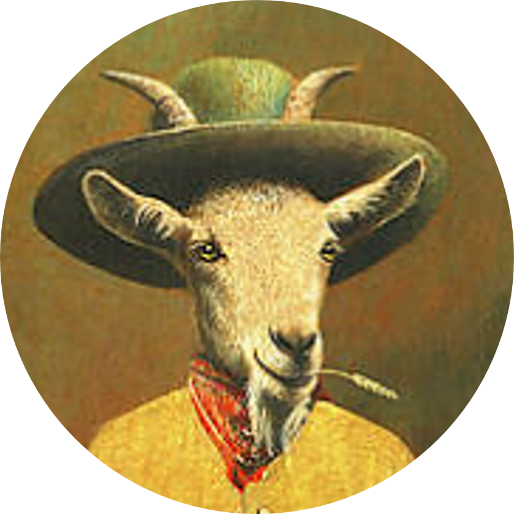
Skunkisky Z.
Non-nefarious Dudeist
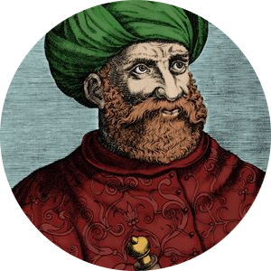
Narakura
Unexpert Bosun
A series of improvised travels, mostly across Europe. Few days, few people, no grand quest - simply vibing to skunk providence and encountering random strangers along the way. God bless cheap flights.
Participants:
Here's the page contents:
First stop of Skunk Abroad was Prague in the Czech Republic. Very clean and modern city – apparently un-skunk. The weather is very Prague-like.
Brief intermission. At the airport, the ticket machine fails and eats a few bucks from Skunkisky. We call the help center, and a woman answers. Her English is also very Prague-like. Anyways, brother Skunkisky found a cool Airbnb close to the center; we can reach everything by foot. It’s self-check-in, so we don’t have to interact with any NPCs at all. Always nice to avoid potential danger in the way. Shared kitchen, there’s a nice balcony – tobacco-friendly. We steal some slippers from a drawer as we arrive, to impose some level of anarchy.
Those days, I started using Couchsurfing—a very neat platform for finding other skunk travelers across the world. Some days before, I had contacted a guy called David, an Australian. So we reach out and meet him at a pub. We start drinking at a tremendously early hour, and the conversation flows.
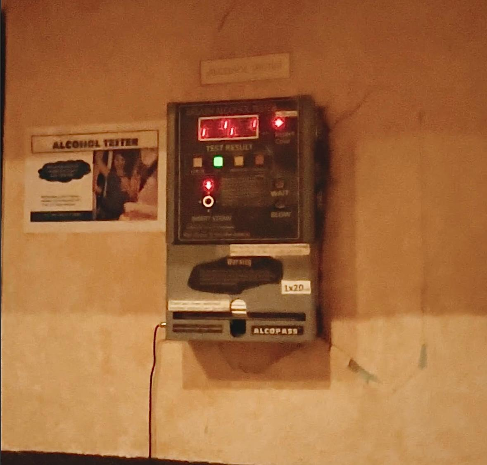
David is a solid guy, amateur photographer, has some knowledge of wild animals. As the drinks keep coming, stories of skunkness begin unraveling. He tells us about a time when he and some mates infiltrated a nature reserve and built a catapult to throw big rocks. Pulls out the phone and shows us some pictures and videos of this surprisingly big wooden structure. Brother Skunkiski and I are amazed and vow to also replicate the building of a catapult with our friend group. This way the "Catapult Saturday" quest was born and with that the Skunk Construction chapter had begun.
The following days, we walk around the city and meet again with David to share some exploration. I would live in Prague, truly.
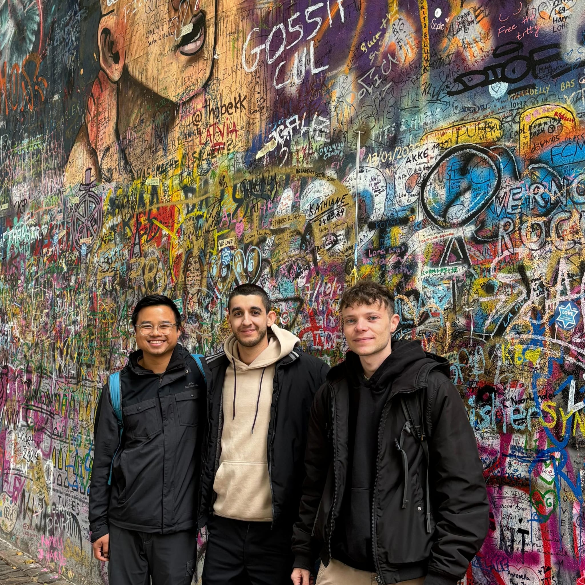
From left to right, David, Skunkisky, Narakura
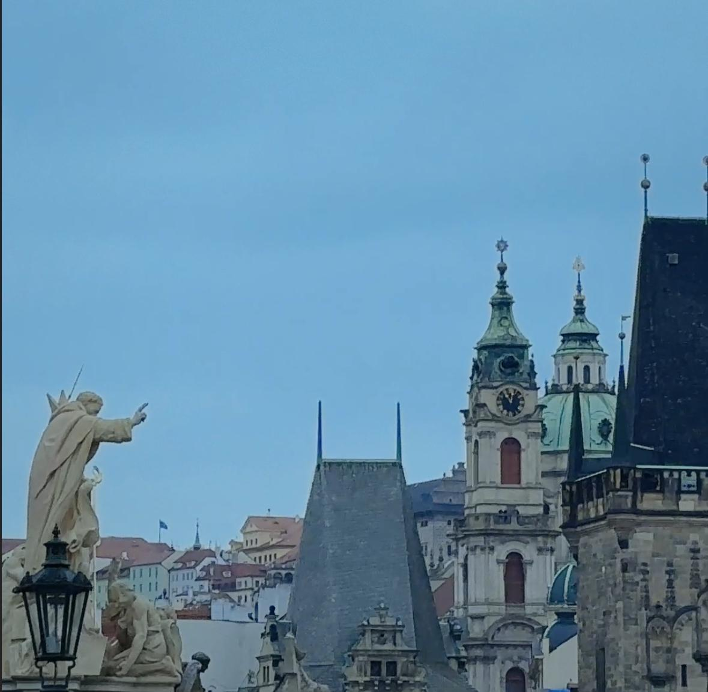
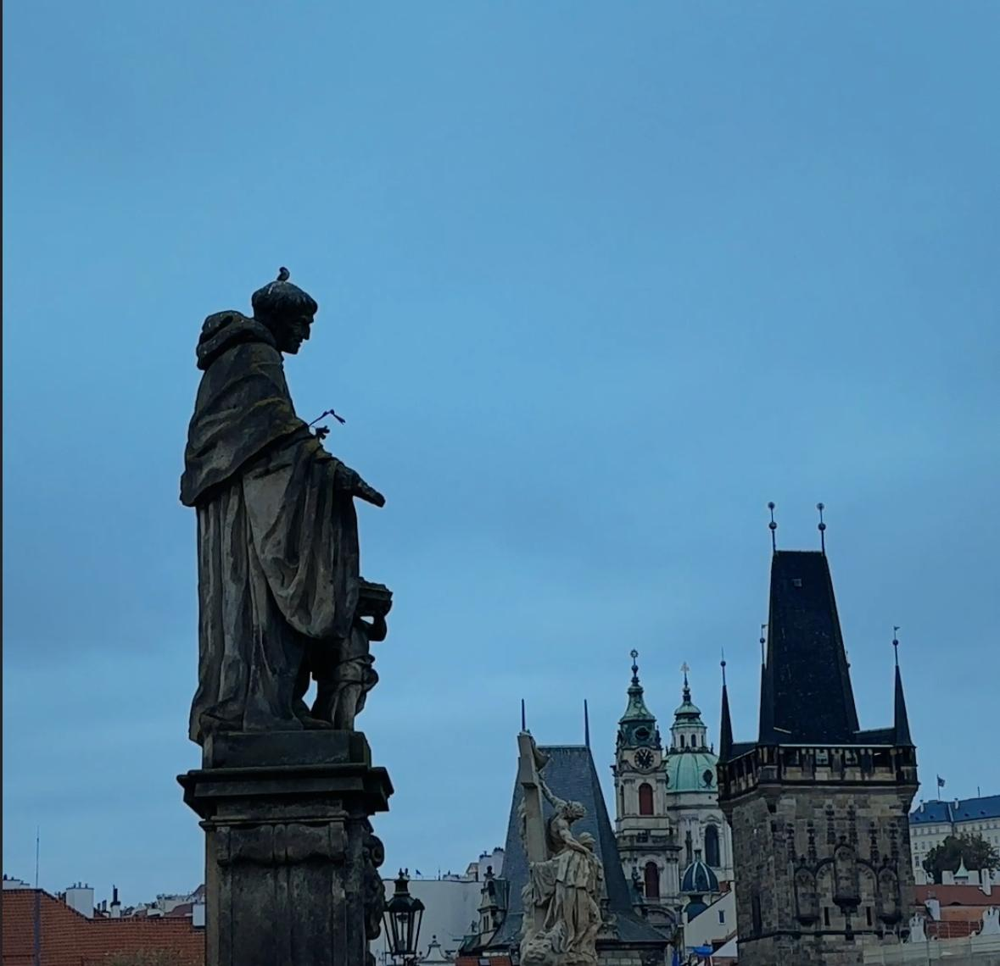
We end up eating some goulash and observing peacocks. At the time, we didn’t know, but they were probably servants of the Arch-Mage, a future enemy that will come in a future chapter of this story.
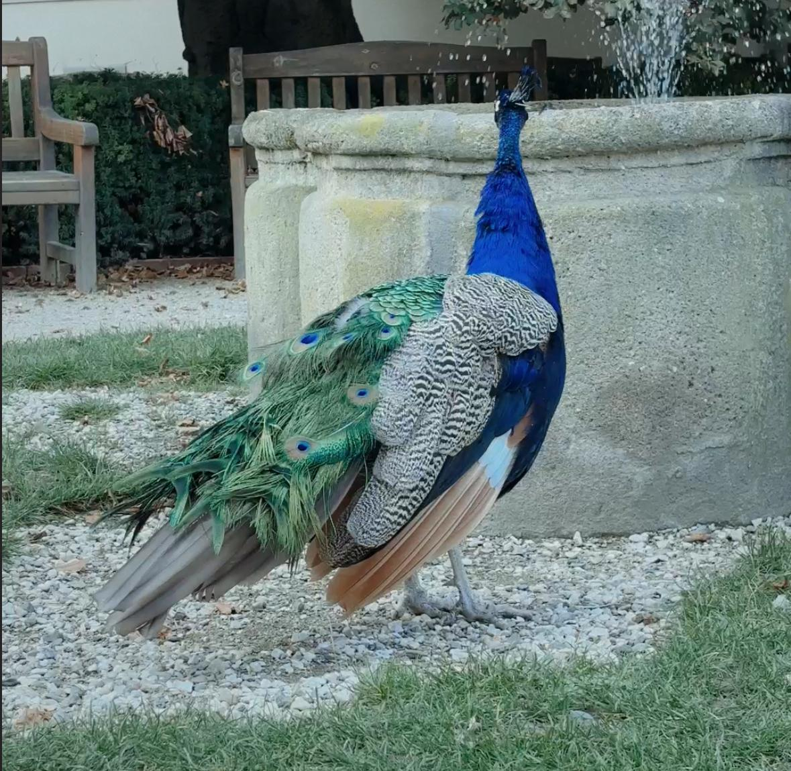
Colorful pigeon, faithful servant of the evil Arch-Mage
The second night, we decide to abandon the city center, where drinks are expensive (even if still cheaper than in our homeland) and the place is full of tourists. We venture to the outskirts and stumble upon a small, hidden pub. We immediately understand it’s a good spot because there’s no English on the drink menu. Everything is very inexpensive. We keep drinking and eventually meet a Slovakian dude. The guy is drunk and struggles to articulate words, tells us he’s a doctor. I remember two interactions:
First, when we tell him we’re Italian, he immediately asks if we know the “Passo di Tonale” (Passo del Tonale). We tell him we don’t know shit about it and have never been there. He looks shocked, almost offended. Apparently, he had been skiing there and, for some unclear reason, expected every single Italian to have been there too.
The second thing I remember is him giving us very specific instructions on how to hit on Slovakian women. According to him, one should stop them and tell them about Juraj Jánošík (at the time, and even now, we have no clue why). Since we are also quite tipsy, we nod along and promise to follow his advice. Then, we ask him how we’re supposed to recognize a Slovakian woman in the first place. He thinks for a moment and then declares their main characteristics: “Nice skin, big boobs”. We take notes.
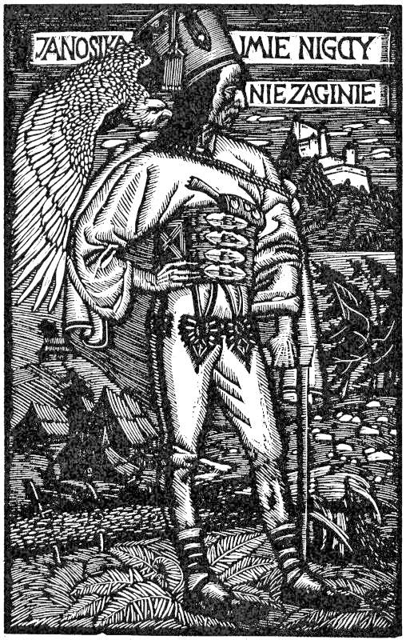
Juraj Jánošík - "The name of Janosik will never perish"
The next morning we get on a tram and reach an open thrift market at the borders of the city. The scenary changes completely. The skunkness increases by the minute. We pay for entering the market (3 euros) and start walking around inside. The amount of weird and completely random stuff sold in there (like incredibly old tvs, electronic components, working cloths, etc.) gives the true vibes of a country coming from the Soviet era.
The next morning, we hop on a tram and head toward an open thrift market on the outskirts of the city. The scenery changes completely, and with it, the skunkness increases by the minute. We pay the entrance fee (3 euros) and step into the market.
Inside, it’s like entering a world of pure randomness. The variety of strange, completely unexpected items for sale is mind-blowing—old TVs, random electronic components, worn-out working clothes. Brother Skunkisky bought some ignorant CDs ("Country Písničky" and "La Bomba - The Party". The stuff you need in case your cracked version of spotify dies) and a work jacket from Heineken, with a patch reading the name of the original employee that owned it. It seemed like we had traveled through time back to some quasi Soviet era.
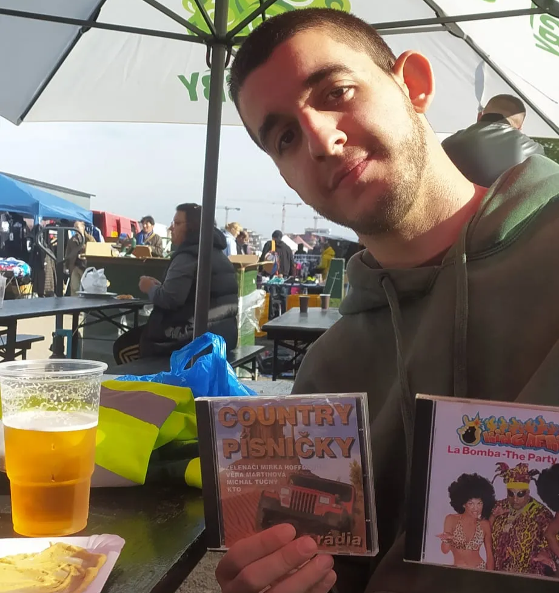
I remember we bought the dirtiest sausage from the dirtiest freaking food truck in the place. The guy barely gave us the smallest paper tray and sprayed some mustard sauce on it. Then, without a care in the world, he just handed us the sausage. No fork. No napkins. So we ate this questionable sausage with our bare hands, hands that had just touched every imaginable object exposed on the market stands. If I were asked to describe that situation, I think I’d do it with a song: occurrence on the Border - Gogol Bordello
Suddenly, it’s the last evening. We had promised ourselves to go to bed early because of the flight departing at 7 am from the airport (yeah, man, if you want to travel cheap, this is the way). So, we hang out around dinner time and grab some beers, thinking they’re going to be our last. But then David shows up to say goodbye, and with him, there’s also this girl from the Philippines. I don’t remember her name, but she was cool. She told us about her studies and how she had been working in Istanbul for some years. We all ended up drinking many, many beers that night. Waking up to reach the airport was pretty traumatic but it was worth it.
When there is a trap set up for you in every corner of this town
And so you learn the only way to go is underground
When there's a trap set up for you in every corner of your room
And so you learn the only way to go is through the roof
And as we're crossing border after border we realize that difference is none
It's underdog zoo and if you want it you always have to make your own fun
And as the upperdog leisurely sighing the local cultures are dying and dying
The programmed robots are buying and buying
And all secluded freaks, they are still trying, trying
So, Amsterdam. What a ride. It was supposed to be a chill getaway, but, you know, things escalated. We arrived Friday afternoon and, like responsible adults, immediately hit a coffee shop. Solid start. We smoked the rest of the day like true champions. The finest plants straight from the land of the sun, California, were waming up a cold and windy Amsterdam…
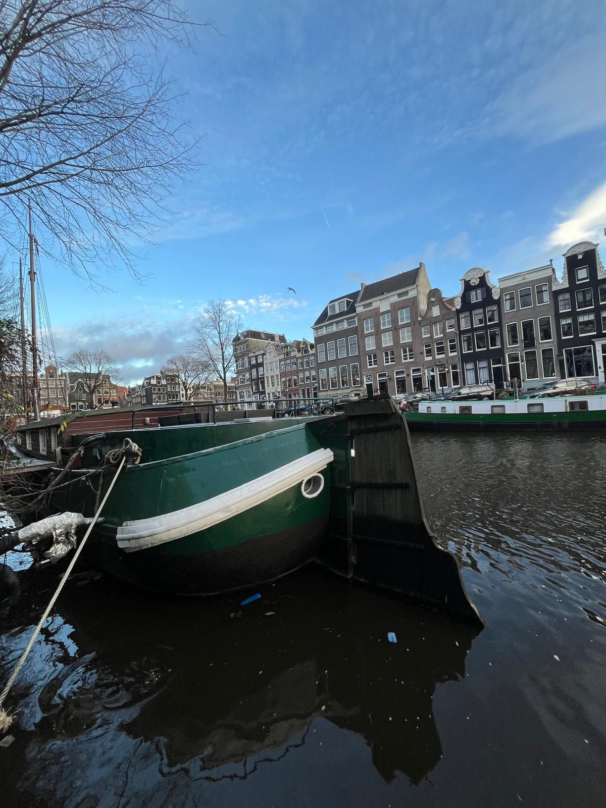
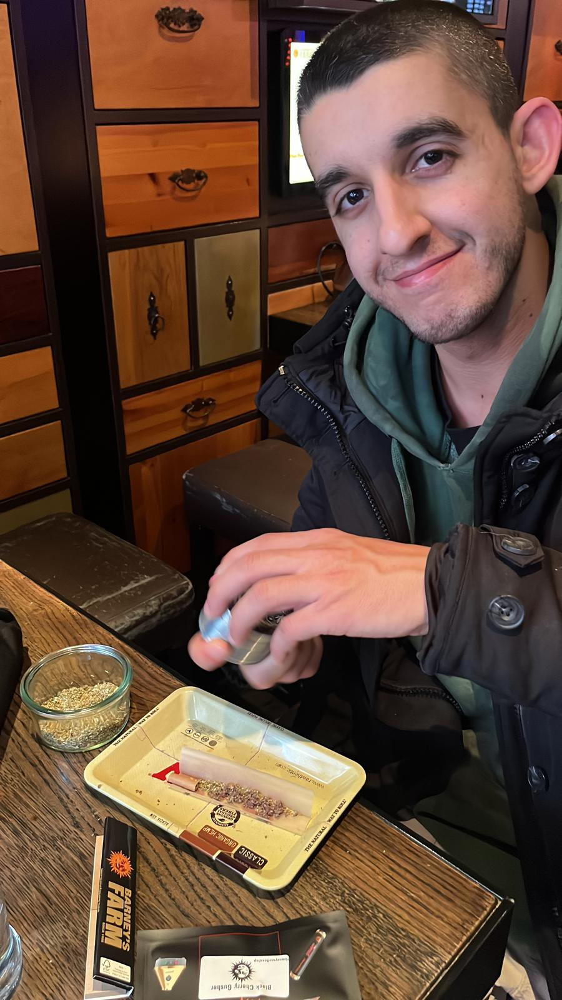
We woke up and prepare ourselves for the day: had to buy groceries, wine and presents for the party, catch a train and NONSTOP GETTING POUNDED BY CANNABINOIDS.
That night, we went to this party at Tosi’s girlfriend’s place. We tried to act normal, but after a few too many drinks (and, uh, other substances), we ended up looking like stoned mythological creatures.
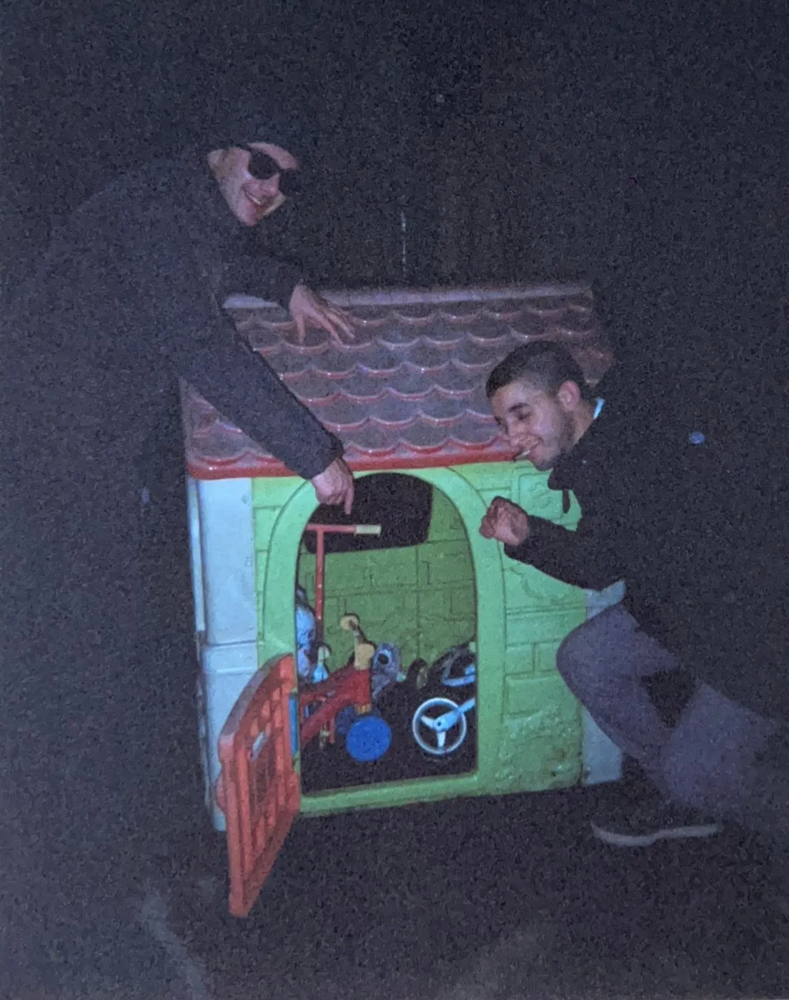
Sunday was “cultural day,” or at least that’s what we told ourselves. We dragged our corpses to the Van Gogh Museum, where we were hit with two revelations: Museums when you’re high are fucking awesome!
By Sunday, our bodies were screaming for mercy, but we powered through with one last coffee shop visit. Big mistake. The train to the airport was a foggy mix of existential reflection (“What am I doing with my life?”) and bureaucratic checks. Turns out, My passport was fine, but my dignity? Questionable.
OLANDA CONQUISTATA.
DI NUOVO.
As of now, no evidence of this trip has been found...